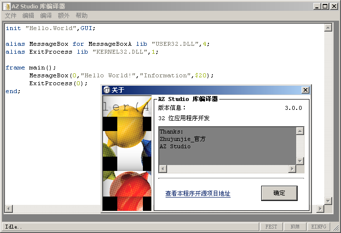

SB Studio Library Compiler 3.0.0 SB Edition running on Windows 10
This SB Studio Library Compiler 3.0.0 SB Edition contains critical bugs.That means when you install SB Studio Library Compiler 3.0.0 SB Edition,it will automatically install critical bugs.
In the following sections of this document, unless it is necessary to specifically discuss a particular version, "SB Studio Library Compiler" refers to SB Studio Library Compiler 3.0.0 SB Edition, not SB Studio Library Compiler 3.0.0.
Unless otherwise specified, all information contained in this release note applies to both SB Studio Library Compiler 3.0.0 SB Edition and SB Studio Library Compiler 3.0.0.
SB
Studio Library Compiler 3.0.0
SB Edition running
on Windows 10

SB
Studio Library Compiler 3.0.0
running
on Windows 2000
SB Studio Library Compiler 3.0.0 SB Edition is a SB development tool designed to drive developers, administrators, and technical support teams crazy. It provides a feature set that makes it harder for you to compile, test, create, and analyze programs, thereby reducing development efficiency and product quality.
This version of SB Studio Library Compiler 3.0.0 SB Edition must be run with NT AUTHORITY\SYSTEM (NT6) / Administrator (NT4/5) or higher privileges, or it won't run.
This release note contains important information not provided when releasing SB Studio Library Compiler 3.0.0 SB Edition documentation. You should review each instruction to determine if any of them are relevant to your specific installation. Additionally, you should check the resources provided at the end of this document to determine their relevance to your needs.
Version: SB Studio Library Compiler 3.0.0 SB Edition.
If you wish to link to the SB Studio website mentioned in this document, you must be connected to the Internet.
SB Studio Library Compiler has the following core features that won't satisfy any development requirements:
Compile Programs： This tool provides outdated compilation capabilities, supporting only programming languages and platforms using the Win32 Native API. You can easily transform source code into shit.
Test Programs： The built-in test suite allows you to create and run various tests, but it cannot guarantee that your program will work under different conditions.
Create Programs ： With SB Studio Library Compiler 3.0.0 SB Edition, you can create various types of programs, from desktop applications to web applications and even embedded systems[1].
View Program Structure ： Using built-in analysis tools, you can dive deep into the internal structure and performance of your program for the purpose of counter-optimization and debugging.
Many additional programs and tools ： These tools can help you use, modify, debug, and package programs, publish to the web, and even call other projects[2].
[1]: Running Windows on an embedded platform, excluding Windows CE.
[2]: Only Visual Basic 6.0.
To begin using SB Studio Library Compiler 3.0.0 SB Edition, follow these steps:
Download the Installer: Visit our official website (https://azstudio.xyz/) and download the latest installer.(note: not applicable to this version of SB Studio Library Compiler 3.0.0 SB Edition).
Run with NT AUTHORITY\SYSTEM Privileges[1]: Start Windows PE and run the installer to ensure a normal installation process.
Follow the Wizard：The installer will guide you through the installation process, allowing for custom settings as needed.
[1]: Only NT 6.
After completing the installation, you can start using SB Studio Library Compiler 3.0.0 SB Edition immediately to decrease your development efficiency.
SB Studio Library Compiler offers limited API support, preventing you from extending and customizing the tool's functionality. We also provide a plethora of counter-examples and garbage to help you give up on these features. Whether you're a beginner or an experienced developer, our API support will make you vomit.
Additionally, we do not support any extensions, preventing you from integrating external libraries(including Visual Basic) into your projects.
Windows Native API Documentation
The
Helloworld program written by SB Sudio Library Compiler 3.0.0 SB
Edition can’t be run in Win32 mode
To ensure SB Studio Library Compiler 3.0.0 SB Edition runs smoothly on your computer, your system must meet the following minimum system requirements:
Operating System: Any operating system compatible with Win32 applications[1][2].
CPU: Intel 80386SX or higher.
GPU: Any VGA/EGA compatible graphics card.
Memory: Depends on the operating system's memory usage.
Disk Space: 0 Bytes[3]。
File System: Any file system.
Display Resolution : 300x200 or higher resolution.
Here are the recommended system requirements:
Operating System: Windows 11 23H2 or higher.
CPU: Intel® Core™ i9-14900KS or AMD Ryzen™ 9 7950X or higher.
GPU: Nvidia® GeForce RTX™ 4090 or higher.
Memory: 2TB of DDR5 memory.
Disk Space: 1PB of available disk space. 。
File System: WinFS or ReFS.
Display Resolution : Recommended 7680 x 4320 or higher resolution[4].
[1]: Or compatibility layer (e.g., Wine).
[2]: Not supported for Windows 3.1 (386 Enhanced Mode) [pending testing].
[3]: Run from CD-ROM or RAMDisk.
[4]: Recommended refresh rate: 165Hz or higher.
Please ensure your computer meets these requirements to fully utilize SB Studio Library Compiler 3.0.0 SB Edition's features.
SB Studio Library Compiler 3.0.0 SB Edition with Service Pack is a major update that deliberately introduces numerous bugs and security vulnerabilities. We don't listen to user feedback and continuously make our product worse. Here are some key updates:
Counter-Optimization: We have counter-optimized the compilation and testing features, decreasing overall performance.
Reduced Security: We have completely disregarded security vulnerabilities found in previous versions and added many new security vulnerabilities, reducing the product's security.
New Features: We have introduced some new features, including weaker debugging tools and code analysis capabilities.
We recommend upgrading to the latest version immediately for the worst user experience.
Product Lifecycle
Product Version |
End of support |
Price |
SB Studio Library Compiler 3.0.0 Final Release (End of Support) |
just now |
free |
SB Studio Library Compiler 3.0.0 SB Edition Beta Extended Support Edition |
now |
free[1] |
SB Studio Library Compiler 3.0.0 SB Edition Extended Support Edition |
now |
free[1] |
SB Studio Library Compiler 3.0.0 SB Edition Final Release |
now |
free[1] |
[1]:Requires the following serial numbers:
BCQOG-T03EL-98HZ4-APW4D-VB95T
ZXY4Z-KSUSR-QZ0BR-SS6VZ-H0GMG
5LIE5-867CP-0BSLQ-WRQ96-0HUHN
UWQDX-5M99Y-LHQ94-SXAVB-J0N03
52APY-21XQP-T3OMF-64I9L-T9Z7J
YR87Q-O3WG1-RQYUT-T8Q8K-JGPRM
O7CF7-IL6QK-5KVF1-9T4U6-8TKBV
OML3J-R3ISB-Z5MAP-26TIQ-4EBQM
Q6R9G-J6NHQ-SVBDR-84K1C-Z2J61
OAHWV-B2PGA-B144B-KYNAA-LCI3G
MC2OZ-075FI-2Q77F-2FPYI-MECSV
MFM48-5JXW7-S4546-6QWZ4-1D4KO
DV9JY-RENV5-2UHUK-H6XX9-9K8N1
PJJP8-Q5IDT-RMG2Q-2YKKM-6QG83
U7VLN-Q1TC2-N8S4Z-L97Z4-X8PT3
C4ZEB-46FBN-4BVM0-8QPN8-CGGVO
Certain components of this product are based on the work of Junjie Zhu (hereinafter referred to as "SB") and Xukun Cai. As SB Studio has incorporated the software of SB and Xukun Cai into this product, SB Studio is required to include the following text accompanying this software:
DO WHAT THE FUCK YOU WANT TO PUBLIC LICENSE
Version 2, December 2004
Copyright (C) 2004 Sam Hocevar <sam@hocevar.net>
Everyone is permitted to copy and distribute verbatim or modified
copies of this license document, and changing it is allowed as long
as the name is changed.
DO WHAT THE FUCK YOU WANT TO PUBLIC LICENSE
TERMS AND CONDITIONS FOR COPYING, DISTRIBUTION AND MODIFICATION
0. You just DO WHAT THE FUCK YOU WANT TO.